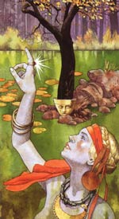

Садб, в ірландській міфології богиня, що уособлює лагідність, кохана Фінна Маккула, ватажка ФІАНа, дружини охоронців Верховного короля. Герой вперше побачив її під час полювання, коли богиня Садб була перетворена в олениха. Вночі, обернувшись жінкою, вона постала перед Фіном Маккула, який зняв з неї закляття, в істинному своєму вигляді. Вони були щасливі, але під час чергової відлучки Фінна Маккулла злий чаклун знову перетворив Садб в олениха.
У пошуках дружини Фінн обшукав всю Ірландію, ліси і долини, але, зневірившись, повернувся до улюбленого заняття, полюванні. Одного разу в лісі він побачив довговолосого хлопчика-голяка, вихованого оленихою в умовах дикої природи. Герой дізнався свого сина від Садб і назвав його Оісін ("маленьким фавном").
Дитина виросла і став таким же майстерним воїном, як батько; крім того, він успадкував від матері, онуки Дагда, витончений дар красномовства.
Не дивно, що поемами Оісін (Оссіана) захоплювалася вся Ірландія. А лагідна, невинна Садб, з волі злобного друїда змушена була більшу частину життя провести в лісі в образі олениха.